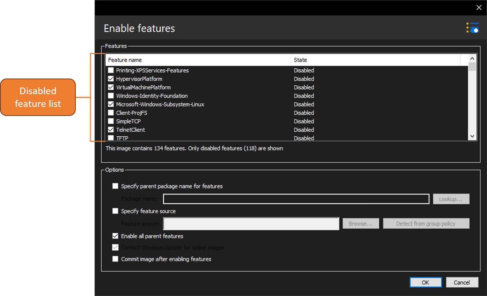
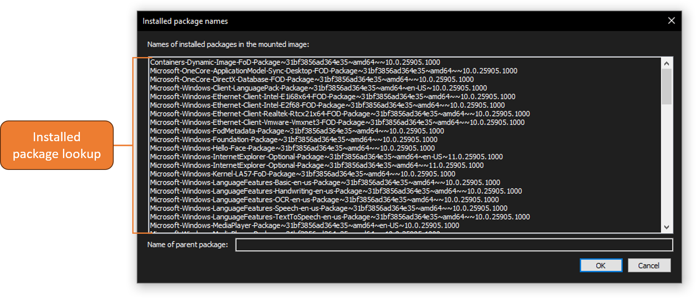

Enabling features

With DISMTools you can enable features of an image to add optional components to a Windows installation. This action can be accessed by clicking Commands > OS packages > Enable feature..., or by clicking the "Enable feature..." button.
Target OS support
This action is supported on the following platforms:
| Platform | Supported? |
|---|---|
| Windows 7/Server 2008 R2 | ✔ |
| Windows 8/Server 2012 | ✔ |
| Windows 8.1/Server 2012 R2 | ✔ |
| Windows 10/Server 2016/2019/2022 | ✔ |
| Windows 11/Server 2025 | ✔ |
This action is supported on DISMTools 0.1.1 and newer
Usage
You need to specify the features you want to enable on your Windows image or installation, and specify settings in order to get the result you want.
Options
- If the parent package is not a Windows Foundation package, the name of the parent package needs to be provided. You can perform a quick package lookup to specify the name of the parent package

- If a feature, whose state can be found in the list, has previously been removed from the image or installation; a feature source needs to be provided. You can browse your file system for an appropriate source, or get the source from group policy
- If you strictly want this operation to use the source and not Windows Update, untick the Windows Update contact option. Do note that this only applies to online installations
- If you want to enable all parent features of the specified features, tick the "Enable all parent features" option
- If you want, you can commit the image after enabling the features (Windows images only)